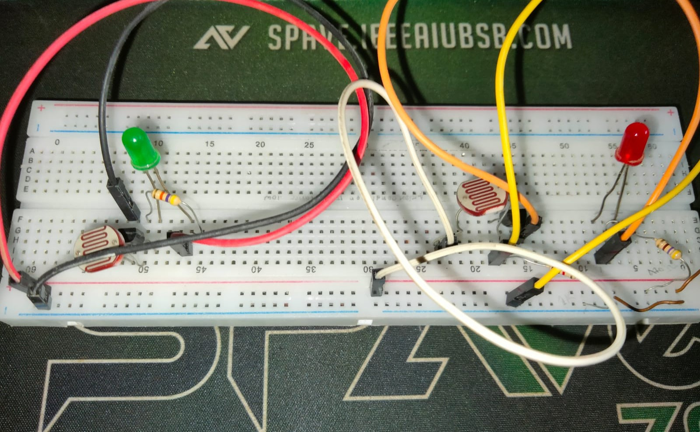

LumoSense: Light and Darkness Detection System
LumoSense is a hardware-based system designed to detect light and darkness in real-time. The system uses an LDR (Light Dependent Resistor) to sense ambient light intensity, and triggers LEDs to indicate light or darkness conditions automatically.
A BC547 BJT transistor acts as a switch to control the LED outputs. When the LDR detects darkness, the circuit activates the corresponding LEDs, making it suitable for automatic lighting, alarms, or educational demonstrations of sensor-based electronics.
Key Components
- LDR (Light Dependent Resistor)
- BC547 BJT Transistor
- LEDs (Red/Green)
- Resistors
- Breadboard and Connecting Wires
This project demonstrates the practical application of sensor circuits, transistor switching, and real-time response systems in electronics.